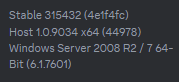
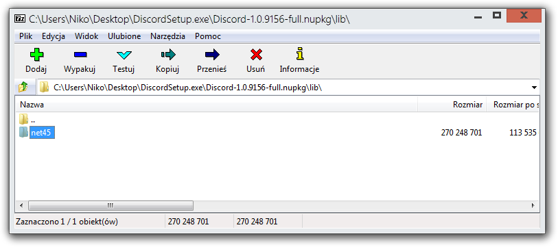
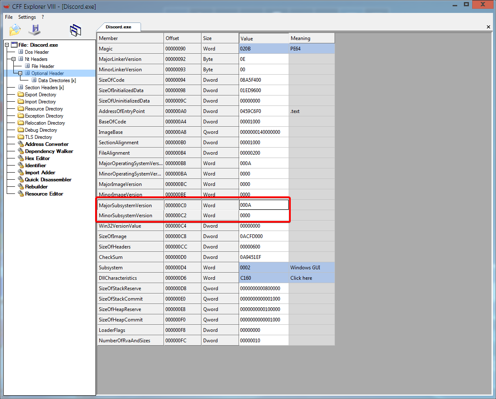
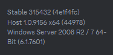

Discord on Windows 7
How to get the latest version of the Discord client working on Windows 7You will also need VxKex installed.
Update 2024-08-08: 1.0.9157 works too.
On your Windows 7 PC
Step 1: Install 64-bit Discord 1.0.9034
This is the latest version of Discord to run on Windows 7 officially, and what the Windows 7/8.1 installer had, albeit 32-bit.You can download it from here or the Download Center.
After that, just install it.

Honestly, you could stop here, 1.0.9034 should keep working for the forseeable future
Step 2: Extract the latest Discord client
You can download it from hereAt the time of writing, it is version 1.0.9154.
After downloading, open the setup file with 7-Zip, then open the .nupkg file, and navigate to the lib folder.
The net45 folder is the Discord files. Extract it to the desktop.

Step 3: Replace Discord 1.0.9034 with whatever the latest is
Go to %LOCALAPPDATA%\DiscordDo not delete app-1.0.9034, doing so will cause the updater to redownload it.
Go into the app-1.0.9034 folder, and empty it out.
Copy in the contents of the net45 folder you extracted earlier.
Step 4: Make it work
Now, to make it all work, edit Discord.exe with CFF Explorer and change the subsystem version to 6.1.
Make the highlighted values be 0006 and 0001 respectively.
Then, go up a folder and enable VxKex on Update.exe
Now, just run it.
